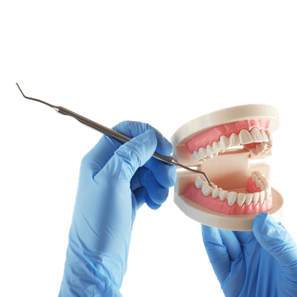
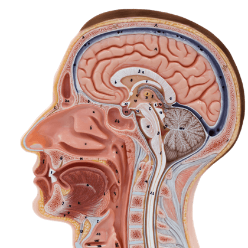

Children's Polyclinic
The Children's Polyclinic focuses on children's health, which starts from the moment they are born to the age of 18/21 years. Not only focusing on aspects of health support needed by children, but also health problems in children such as diseases, disorders, allergies, and so on that can interfere with child growth and development." style="width:100%" onclick="myFunction(this);">
Dental Specialist Polyclinic
Dental Specialist Polyclinic deals with advanced specialists of dentists who study the oral cavity in greater depth starting from the mouth, gums, teeth location, and dental implants." style="width:100%" onclick="myFunction(this);">
Internal Medicine Polyclinic
Internal Medicine Polyclinic focuses on handling various diseases related to health problems in the internal organs suffered. This polyclinic usually only treats adult patients to the elderly but cannot perform the surgical process to treat the illness that is experienced." style="width:100%" onclick="myFunction(this);">
The Gynecology and Obstetrics Clinic
The Gynecology and Obstetrics Clinic is also often referred to as Obstetrics and Gynecology. This polyclinic focuses on handling the process of pregnancy in a mother to the birth process" style="width:100%" onclick="myFunction(this);">
General Practitioners
General practitioners are medical personnel who carry out medical practices to examine all possibilities of general health problems of patients of all ages" style="width:100%" onclick="myFunction(this);">
Ear Nose Throat (ENT) Polyclinic
Ear Nose Throat (ENT) Polyclinic or in medical terms known as otolaryngology / Otoringolaryngology focuses on handling problems related to the Ear, Nose, Throat and head and neck" style="width:100%" onclick="myFunction(this);">
Home Care
Homecare is a continuous health service that is usually provided to patients in the patient's home environment. where this service presents professional nurses to care for accompanying and replacing family duties in caring for patients both within the hospital and home environments" style="width:100%" onclick="myFunction(this);">
Laboratory
Laboratory is one of the installations in the hospital which is a supporting service that aims to help diagnose the disease and can help see the risk of the disease so that it can be overcome early" style="width:100%" onclick="myFunction(this);">
Medical Check-up
Medical check-ups are a series of routine health tests conducted at a hospital to check overall body health and anticipate disease risks." style="width:100%" onclick="myFunction(this);">
The Radiology Polyclinic
The Radiology Polyclinic deals with medical science that utilizes radiation for therapeutic or imaging studies. diagnostic radiation carried out aims to be able to see the inside of the body without the need for invasive procedures." style="width:100%" onclick="myFunction(this);">